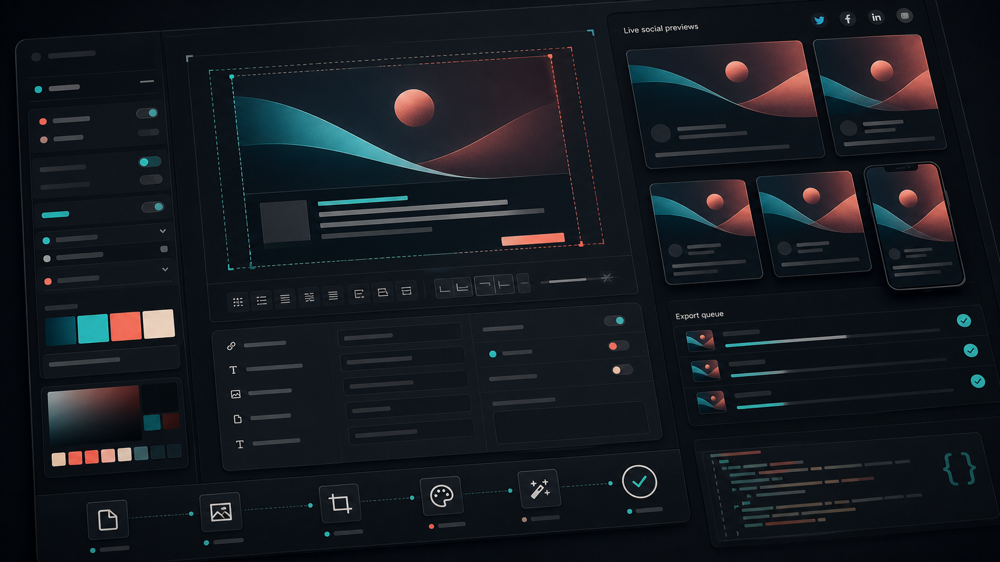

OGP画像は記事の入口をデザインする場所
ポートフォリオの記事は、サイト内だけで読まれるとは限りません。SNS、チャット、提案資料、採用担当者への共有リンクなど、外部で最初に見られることがあります。その時に表示されるOGP画像は、記事の品質を予告する小さなファーストビューです。
タイトルが読みにくい、画像が暗すぎる、毎回バラバラの見た目になる。こうした状態は、記事本文の品質が高くても入口で損をします。OGP画像を自動生成できる設計にしておくと、記事が増えても印象が揃います。

テンプレートは1種類に絞りすぎない
すべての記事に同じテンプレートを使うと統一感は出ますが、記事のテーマが伝わりにくくなる場合があります。ノウハウ記事、ケーススタディ、CMS運用記事、ブランド記事のように、カテゴリごとに少しだけレイアウトを変えると、一覧で見た時にも豊かになります。
ただし、テンプレートを増やしすぎると運用が重くなります。背景、タイトル位置、カテゴリ表示、アクセント色の4点だけを変えられる程度にし、ブランドの基礎要素は固定します。
背景画像はタイトルを読ませるために使う
OGP画像では、背景ビジュアルの主張が強すぎるとタイトルが読めません。記事カバーをそのまま使う場合も、暗いオーバーレイやぼかし、余白を足して、文字の読みやすさを優先します。
- タイトル領域の背景は情報量を抑える
- カテゴリごとにアクセント色を変える
- 長いタイトルは2行までに収める
- 小さいプレビューでも読める太さにする
スマホの小さいプレビューで確認する
OGP画像は大きな制作画面で見ると美しくても、SNSでは小さく表示されます。細い文字、低コントラスト、端に寄せたロゴは簡単に読めなくなります。完成前に、実際の共有サイズに近い小さなプレビューで確認します。
日本語タイトルの場合、改行位置も重要です。2文字だけ次の行に落ちると、画像全体の完成度が下がります。テンプレート側で最大文字数、行数、余白を決め、必要ならタイトルの短縮版を別フィールドで持たせます。
CMSデータから自動生成できる形にする
記事タイトル、カテゴリ、公開日、カバー画像、著者名を使えば、OGP画像は自動生成できます。最初は静的な画像でも、将来的にはCMSデータを読み込んで、記事公開時に自動で書き出す形へ拡張できます。
自動化の目的は、手を抜くことではありません。毎回同じ品質基準で作れるようにすることです。記事が増えるほど、こうした仕組みがポートフォリオ全体の完成度を底上げします。